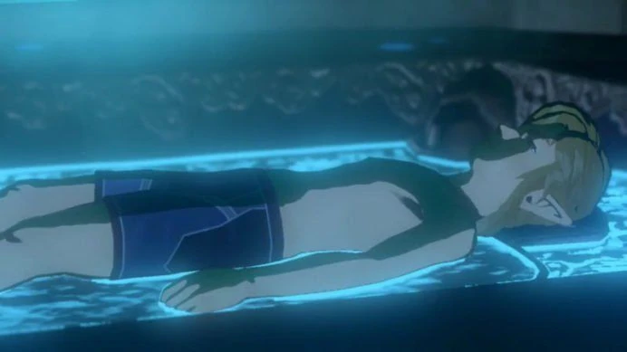

Historia de The Legend of Zelda
Los sucesos del juego toman lugar cien años después de que una terrible catástrofe dejase al Reino de Hyrule en ruinas. Esto se debió a la aparición de un ser conocido como Ganon, que trajo la destrucción al reino. Debido a que nadie era capaz de parar a tal monstruosidad, se recurrió a un último recurso: sellarlo en el propio Castillo de Hyrule. Durante los cien años siguientes, los rastros de civilización del reino quedaron prácticamente cubiertos y consumidos por la naturaleza.
El juego comienza con una misteriosa voz que se dirige a Link para que despierte de un sueño profundo. En ese momento, Link despierta de un largo letargo de cien años en un recipiente cubierto de líquido similar a una cámara de criogénesis, en un lugar ancestral llamado Santuario de la Resurrección. En esa misma habitación, el héroe encuentra un objeto llamado piedra sheikah en un panel de control muy antiguo. Más adelante, halla un par de cofres que contienen una camisa y un par de pantalones antiguos. Antes de salir del santuario, la misma voz le informa que él es la luz que debe hacer brillar a Hyrule una vez más.
Fuera del santuario, Link encuentra un mundo inmenso y construcciones reclamadas por la naturaleza. También se encuentra con un misterioso hombre anciano encapuchado, quien le explica que se encuentran en la Meseta de los albores, lugar de origen del Reino de Hyrule. Además, le indica la localización del Templo del Tiempo, que se encuentra muy cerca de ellos, pero completamente en ruinas. Poco después, Link escucha la voz del inicio una vez más, esta vez indicándole que vaya al lugar marcado en la piedra sheikah. En ese punto, Link encuentra un nuevo panel de control en el interior de una estructura cubierta de piedra, en el que encaja dicha piedra. Al entrar en contacto con el pedestal, una serie de estructuras, incluida la misma en la que se encuentra, empiezan a emerger por todo Hyrule, al igual que la activación de las diversas entradas de varios santuarios esparcidos por estas grandes tierras. Las estructuras mencionadas reciben el nombre de torres Sheikah.
La voz vuelve a comunicarse con Link en lo alto de la Torre de la Resurreción, y esta vez le revela a Link que él llevaba dormido cien años. Además, en ese momento Link dirige su vista hacia el Castillo de Hyrule, que se aprecia en el horizonte, y en el cual se puede ver a Ganon, conocido como Calamidad, en forma de una niebla negra y rojiza cubriendo el castillo. La voz le explica a Link que, aunque había sido sellado un siglo atrás, la barrera que lo retiene se ha debilitado, y que un gran desastre podría ocurrir si el sello llegase a romperse. Es entonces cuando le encomienda la tarea de acabar con el terrible destino que asola las tierras de Hyrule.
Tras bajarse de la torre, el anciano reaparece para explicarle a Link que Ganon subyugó Hyrule cien años atrás. El anciano le advierte del tedioso periplo que supondría llegar hasta el castillo debido a los barrancos y el terreno irregular de la Meseta de los albores, insuperables sin un elemento volador, a la vez que afirma que si no se detuviese a Ganon pronto, su calamidad podría asolar Hyrule de nuevo. El anciano le propone entregarle entonces a Link su paravela, si consigue algún tesoro procedente de los santuarios. Estos santuarios, que suponen más de cien repartidos por todo Hyrule, están habitados por antiguos monjes Sheikah. Estos monjes, que llevan esperando la llegada de alguien que se proponga a acabar con Ganon, le concederán a Link orbes espirituales que les habían sido encomendados por la Diosa Hylia, los cuales le servirán para progresar en su aventura. Además, nuevas aplicaciones le serán otorgadas a la piedra sheikah al inicio de cada santuario.
Tras superar el primer santuario, el anciano aparece de nuevo, y le explica a Link cómo la aparición de las diversas torres y la activación de los santuarios de los monjes están de algún modo conectados con la piedra sheikah. Adicionalmente, le expone cómo la raza sheikah llegó a salvar Hyrule múltiples veces, hasta llegada una época en la que desaparecieron misteriosamente. Antes de marcharse, y exigiéndole más a Link, el anciano le promete que si definitivamente supera todos los santuarios de la Meseta de los albores, y acude a él con más orbes, le hará entrega de su paravela para poder superar las irregularidades de la zona y continuar con su aventura.
La traducción del texto en hyliano que había en el mapa de la edición de coleccionista del juego, corresponde más o menos a esto:
Los hylians transmiten la historia de un pasado antiguo, donde múltiples razas vivieron y trabajaron juntas en armonía. El aura azul de la tribu sheikah se respiraba por la tierra, y esta prosperidad mutual continuó, hasta la llegada de un catastrófico desastre. El héroe y la princesa intentaron en vano apresar el terror, el cual fue conocido como Ganon Calamidad. Las bestias divinas despertaron y desplegaron un ejército mecánico que hizo temer al rey y a su pueblo. Atraparon el poder de Ganon y lo sellaron... Pero desde entonces los sheikah fueron desterrados de la tierra"